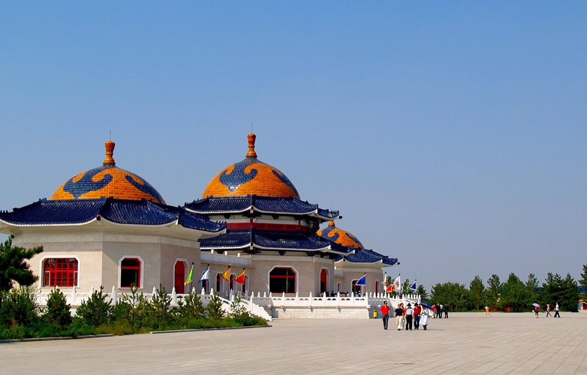

Shanghai to Inner Mongolia Road Trip
Three weeks by car in a full loop from Shanghai: the ancient capitals of Nanjing, Kaifeng, Luoyang and Xi’an, north across the Loess Plateau to the deserts and grasslands of Inner Mongolia, and home through the Buddhist grottoes of Shanxi, Mount Tai and Confucius’s hometown.
Researched November 2026 for late May to mid June 2027. Hours, prices and booking rules change, so check before you go. Drive distances and times are estimates; confirm in Amap.

Why this loop
Two thousand years of Chinese history in one drive, without retracing a single road: the Terracotta Army, the Longmen and Yungang grottoes, Shaolin, the Hanging Temple, Mount Tai and Qufu, with the Kubuqi desert and the Inner Mongolian grassland in between, and a different regional cuisine almost every day.
Late May to mid June: hot in the middle of China (30–35°C in Henan and Xi’an, locally 40°C in heatwaves), pleasant 25–30°C in Inner Mongolia with cool nights, and cold nights on Wutai Shan. The grassland usually greens through June, depending on rain. Dragon Boat Festival is a single day off on Wed 9 June 2027; if you overlap the gaokao exams (around 7–8 June, varies by province), expect traffic control near exam sites.
The route: Shanghai → Nanjing → Xuzhou → Kaifeng → Luoyang → Xi’an → Yan’an → Yulin → Ordos → Hohhot → Datong → Wutai Shan → Zhengding → Tai’an → Qufu → Huai’an → Yangzhou → Shanghai. 21 days, about 4,500 km of route (5,250 km with sightseeing), drives of up to about 3½ hours, two nights in the big cities.
Highlights
- The Terracotta Army and Xi’an’s city wall
- Longmen and Yungang, two of China’s three great Buddhist grottoes
- The Genghis Khan Mausoleum, the Kubuqi desert and a day on the grassland
- The Hanging Temple clinging to a cliff, and Wutai Shan’s monasteries
- Mount Tai and the Confucius Temple, Mansion and Cemetery in Qufu
- A food trail: Nanjing duck, Kaifeng night market, Xi’an noodles, Inner Mongolian mutton, Shanxi noodles, Huaiyang cooking and Yangzhou morning tea
Good to know
- Most big sights need real-name booking with your passport, each with its own window: Yungang 1–7 days ahead and never same-day, Shaanxi History Museum 5 days ahead at 17:00, Wutai Shan tickets plus a separate vehicle booking, Hanging Temple timed climbing tickets. Bring passports; online systems do not always accept them, so allow for the counter.
- Charge at least every 350 km and arrive with 20–30% left: Inner Mongolia’s service areas are far apart.
- Many passports can now visit China visa-free for up to 30 days; check the rule for yours. Hotels register foreign guests at check-in.
- See the Henan and Xi’an sights early in the day to beat the heat.
Two ways to do it
💰 Best value
- Stay: the value pick in each city, 4-star or a platform-rated equivalent (see Where to stay).
- Eat: local specialities at well-rated everyday places.
- About CNY 11,680–15,220 per person for 21 days, including the car, excluding travel to the start.
✨ Best experience
- Stay: heritage and resort picks where they exist: a courtyard hotel in an old town, the Xiangshawan desert resort instead of the Ordos night (swap the night and drive on to Hohhot next day), a temple-view stay on Wutai Shan.
- Eat: signature restaurants: a Luoyang water banquet, Nanjing and Huaiyang banquet cooking, roast whole lamb on the grassland, Yangzhou morning tea at a famous teahouse.
- About CNY 15,780–21,140 per person.
Same route and days for both; only hotels and meals change.
Itinerary: 21 days, 20 nights
Each driving day is either one drive (leave early, arrive for a late lunch, then sightseeing only) or two drives with a lunch stop in between. Short hops to sights are not counted.
Morning
🚗 Shanghai → Nanjing · 300 km · 3h30
Leave about 9:00.
Lunch
Late lunch in Nanjing: salted duck, duck-blood soup.
Afternoon
Confucius Temple and an evening walk along the Qinhuai River.
Morning
Ming Xiaoling and the Sun Yat-sen Mausoleum on Purple Mountain.
Lunch
Lunch near Purple Mountain or downtown.
Afternoon
Nanjing Museum and a stretch of the Ming city wall.
⚡ Charge this evening at the hotel (about 320 km since the last charge)
Morning
🚗 Nanjing → Xuzhou · 340 km · 3h45
Leave about 8:30.
Lunch
Late lunch in Xuzhou: Xuzhou "sha" soup, roast mutton.
Afternoon
Han dynasty terracotta warriors and the rock-cut Chu king tombs.
⚡ Charge overnight at the previous hotel or before setting off (about 40 km since the last charge)
⚡ Charge this evening at the hotel (about 340 km since the last charge)
Morning
🚗 Xuzhou → Kaifeng · 290 km · 3h15
Leave about 9:00.
Lunch
Late lunch in Kaifeng: soup dumplings (guantang bao).
Afternoon
Iron Pagoda and Daxiangguo Temple; night market after dark.
Morning
🚗 Kaifeng → Shaolin (Dengfeng) · 160 km · 2h
Leave about 8:30.
Lunch
Lunch in Dengfeng, then Shaolin Temple and the Pagoda Forest.
Afternoon
🚗 Shaolin → Luoyang · 60 km · 55 min
Evening in Luoyang old town.
⚡ Charge overnight at the previous hotel or before setting off (about 350 km since the last charge)
Morning
Longmen Grottoes at opening (UNESCO).
Lunch
Lunch in Luoyang: beef soup or a "water banquet".
Afternoon
White Horse Temple and Luoyang Museum.
Morning
🚗 Luoyang → Huayin (Mount Hua) · 250 km · 2h45
Leave about 8:30.
Lunch
Lunch in Huayin, with a look at Xiyue Temple below Mount Hua.
Afternoon
🚗 Huayin → Xi’an · 130 km · 1h30
City wall at dusk; dinner in the Muslim Quarter.
⚡ Charge overnight at the previous hotel or before setting off (about 280 km since the last charge)
⚡ Charge at the lunch stop (about 250 km since the last charge)
Morning
Terracotta Army at opening (book ahead).
Lunch
Lunch near Lintong.
Afternoon
Huaqing Palace, or the Shaanxi History Museum if you got tickets.
Morning
🚗 Xi’an → Huangdi Mausoleum · 170 km · 2h
Leave about 8:30.
Lunch
Lunch in Huangling, then the Yellow Emperor’s mausoleum.
Afternoon
🚗 Huangling → Yan’an · 140 km · 1h40
Arrive in Yan’an late afternoon; the revolutionary sites are tomorrow morning (they close about 17:30).
⚡ Charge overnight at the previous hotel or before setting off (about 240 km since the last charge)
Morning
🚗 Yan’an → Yulin · 270 km · 3h10
Yangjialing or Zaoyuan revolutionary site at 8:00, leave about 10:30 across the Loess Plateau.
Lunch
Late lunch in Yulin: Shaanbei mutton, buckwheat noodles.
Afternoon
Zhenbeitai Great Wall fort and Yulin old town.
⚡ Charge overnight at the previous hotel or before setting off (about 330 km since the last charge)
Morning
🚗 Yulin → Genghis Khan Mausoleum · 135 km · 1h40
Leave about 9:00, into Inner Mongolia.
Lunch
Lunch at Ejin Horo: hand-held mutton, milk tea; then the mausoleum.
Afternoon
🚗 Ejin Horo → Ordos · 35 km · 35 min
Evening in Ordos (Kangbashi).
⚡ Charge overnight at the previous hotel or before setting off (about 300 km since the last charge)
Morning
🚗 Ordos → Xiangshawan · 90 km · 1h10
Leave about 8:30.
Lunch
The singing sands of the Kubuqi desert, with lunch at Xiangshawan.
Afternoon
🚗 Xiangshawan → Hohhot · 235 km · 2h45
Arrive Hohhot early evening.
⚡ Charge at the lunch stop (about 280 km since the last charge)
Morning
Out to the grassland (Xilamuren or Gegentala, about 100 km): riding, Mongolian games.
Lunch
Lunch on the grassland: roast lamb, milk tea.
Afternoon
A full grassland day; back to Hohhot by evening, dinner near Dazhao Temple. (A yurt night is possible but not in the budget.)
⚡ Charge this evening at the hotel (about 255 km since the last charge)
Morning
🚗 Hohhot → Datong · 210 km · 2h35
Dazhao Temple and the Inner Mongolia Museum (closed Mondays) in the morning, leave about 11:30.
Lunch
Late lunch in Datong: knife-cut noodles.
Afternoon
Walk the city walls at sunset.
⚡ Charge overnight at the previous hotel or before setting off (about 200 km since the last charge)
Morning
Yungang Grottoes at opening (UNESCO).
Lunch
Lunch in Datong: copper hotpot or noodles.
Afternoon
Huayan Temple and the Nine Dragon Screen.
Morning
🚗 Datong → Hanging Temple · 85 km · 1h25
Leave about 7:30. Book the timed climbing ticket ahead; all visitors take the shuttle from the Hengshan visitor centre.
Lunch
Hanging Temple, then lunch in Hunyuan.
Afternoon
🚗 Hunyuan → Wutai Shan · 150 km · 2h30
Over the mountains; evening in Taihuai village.
⚡ Charge overnight at the previous hotel or before setting off (about 270 km since the last charge)
Morning
🚗 Wutai Shan → Zhengding · 210 km · 2h45
Early visit to Xiantong and Tayuan temples, leave about 10:00.
Lunch
Late lunch in Zhengding.
Afternoon
Longxing Temple and the ancient town.
⚡ Charge overnight at the previous hotel or before setting off (about 255 km since the last charge)
Morning
🚗 Zhengding → Jinan · 300 km · 3h15
Leave about 8:30.
Lunch
Lunch in Jinan and a short look at Baotu Spring.
Afternoon
🚗 Jinan → Tai’an · 70 km · 1h
Dai Temple at the foot of Mount Tai.
⚡ Charge overnight at the previous hotel or before setting off (about 230 km since the last charge)
⚡ Charge at the lunch stop (about 300 km since the last charge)
Morning
Mount Tai by cable car at opening.
Lunch
Lunch in Tai’an: Mount Tai tofu feast.
Afternoon
🚗 Tai’an → Qufu · 75 km · 1h
Confucius Temple in the late afternoon (the Mansion and Cemetery tomorrow morning).
Morning
🚗 Qufu → Suqian · 260 km · 2h55
Confucius Mansion at 8:00, then the Cemetery; leave about 10:30.
Lunch
Lunch in Suqian (Xiang Yu’s hometown).
Afternoon
🚗 Suqian → Huai’an · 100 km · 1h15
Huaiyang dinner and the Grand Canal in the evening.
⚡ Charge overnight at the previous hotel or before setting off (about 195 km since the last charge)
⚡ Charge at the lunch stop (about 260 km since the last charge)
Morning
🚗 Huai’an → Yangzhou · 170 km · 2h
Leave about 8:30. (The China Grand Canal Museum needs an extra night in Yangzhou.)
Lunch
Yangzhou: Slender West Lake and an early lunch of Yangzhou dim sum and fried rice.
Afternoon
🚗 Yangzhou → Shanghai · 260 km · 3h
Home by evening.
⚡ Charge at the lunch stop (about 290 km since the last charge)
Driving and charging
- Driving in China needs a Chinese licence. Visitors can get a temporary driving permit (up to 3 months) at a vehicle office with a passport and a translated licence; an International Driving Permit is not accepted.
- Car: a large 6-seat electric MPV such as the Li Auto MEGA, ZEEKR 009 or DENZA D9. The MEGA and 009 are fully electric with long range and very fast charging (the MEGA has its own Li Auto supercharger network on main expressways). The D9 also comes as a plug-in hybrid (DM-i) with a fuel backup, the safest choice for the remote stretches. Plan charging stops with the car's navigation or Amap's charger layer, and arrive at each hotel with enough charge for the next morning.
- Expressway service areas on G2/G30/G65/G6/G55 typically have State Grid or TELD fast chargers; queues form at holiday peaks (Dragon Boat Day, 9 June), so charge overnight at hotels with chargers (filter on Ctrip/Amap) instead.
- Install Amap (高德) plus a charging app such as 'e充电' (State Grid), TELD (特来电) or Star Charge (星星充电); most accept Alipay/WeChat Pay. Payment set-up may need a Chinese phone number.
- Charge to ~80% in cities with dense networks (Xi'an, Hohhot, Datong); in hot weather run AC on battery and expect 10-20% less electric range with 6 adults and luggage.
- Total driving: about 4,500 km.
Transport costs for the car Estimates. Tolls: expressway share of the route at CNY 0.40–0.60 per km for a passenger car. Charging: 22–26 kWh per 100 km for a large electric MPV at CNY 1.2–1.8 per kWh on public fast chargers (cheaper at hotels or off-peak). Car hire is separate.
| Whole car | Per person (6) | |
|---|---|---|
| Distance | 5,240 km (route 4,500 + sightseeing 750); expressway about 3,820 km | |
| Highway tolls | CNY 1,530–2,290 | CNY 250–380 |
| Charging (1,150–1,360 kWh) | CNY 1,380–2,450 | CNY 230–410 |
| Total | CNY 2,910–4,750 | CNY 490–790 |
| Car hire (estimate) | CNY 14,000–20,000 | CNY 2,330–3,330 |
| If you rent the DENZA D9 DM-i and drive on fuel (6.6–7.1 L/100 km, CNY 8/L assumed) | CNY 2,770–2,980 | CNY 460–500 |
Conservative case for a fully loaded MPV: 24–30 kWh per 100 km, i.e. 1,260–1,570 kWh, CNY 1,510–2,830 for the car. Pay tolls by ETC or at staffed lanes; keep a bank card or cash as backup.
⚡ Charging plan Plans a top-up at least every 350 km and arrival with 20–30% left: a full six-seat MPV at expressway speed with air-conditioning falls well short of its rated range. Charge at lunch stops (30–45 min on a fast charger) or near the hotel in the evening, and check each station in Amap or the operator app on the day; do not rely on a hotel listing that says it has chargers.
| Day | Where | km since last charge |
|---|---|---|
| 2 | Nanjing (evening) | 320 km |
| 3 | Nanjing (overnight or morning) | 40 km |
| 3 | Xuzhou (evening) | 340 km |
| 5 | Kaifeng (overnight or morning) | 350 km |
| 7 | Luoyang (overnight or morning) | 280 km |
| 7 | Lunch in Huayin (lunch stop) | 250 km |
| 9 | Xi’an (overnight or morning) | 240 km |
| 10 | Yan’an (overnight or morning) | 330 km |
| 11 | Yulin (overnight or morning) | 300 km |
| 12 | The singing sands of the Kubuqi desert (lunch stop) | 280 km |
| 13 | Hohhot (evening) | 255 km |
| 14 | Hohhot (overnight or morning) | 200 km |
| 16 | Datong (overnight or morning) | 270 km |
| 17 | Wutai Shan (overnight or morning) | 255 km |
| 18 | Zhengding (overnight or morning) | 230 km |
| 18 | Lunch in Jinan and a short look at Baotu Spring. (lunch stop) | 300 km |
| 20 | Qufu (overnight or morning) | 195 km |
| 20 | Lunch in Suqian (Xiang Yu’s hometown). (lunch stop) | 260 km |
| 21 | Yangzhou (lunch stop) | 290 km |
Top sights


.jpg){kind=link}



Nanjing
- Sun Yat-sen Mausoleum: Hillside mausoleum of the founder of the Republic, 392 granite steps on Purple Mountain. 08:30-17:00 · closed Mondays (main hall closed; grounds open) · free · Real-name booking via official WeChat mini-program; passport usually accepted, up to 7 days ahead; free
- Ming Xiaoling Mausoleum UNESCO: Tomb of the first Ming emperor, with the Sacred Way of stone animals. 06:30–18:30 (Feb–Nov ticket sales) · 70 CNY · Online or gate; passport OK
- Memorial Hall of the Victims of the Nanjing Massacre: Sober national memorial and museum to the 1937 massacre. 08:30-17:00 (last entry 16:30) · closed Mondays (except holidays) · free · Real-name booking via official WeChat mini-program; passport usually accepted; foreign passport can book
- Zhonghuamen Gate and City Wall: Largest Ming gate fortress; walk the 600-year-old wall top. 08:30-21:00 · 50 CNY · Gate or WeChat; passport OK
Xuzhou
- Han Dynasty Terracotta Army Museum (Shizishan): Miniature Western Han terracotta soldiers plus the rock-cut tomb of the Prince of Chu. 08:30-17:30 · closed None (check) · 70 CNY · Gate or online; passport OK
- Guishan Han Tombs: Rock-cut Western Han royal tomb with precision tunnels and 'mystery' features. 08:30-17:30 · 60 CNY · Gate or online
Kaifeng
- Iron Pagoda Park: Northern Song 'iron' pagoda, actually brown glazed brick, from 1049. 07:30-18:30 · 50 CNY · Gate or online
- Qingming Riverside Landscape Garden: Theme park recreating the famous Song scroll, with shows and an evening spectacle. 09:00-22:00 · 120 CNY · Online; separate ticket for night show
- Daxiangguo Temple: Famous Buddhist temple of the Song capital; thousand-arm Guanyin. 08:00-18:00 · 40 CNY · Gate
Shaolin (Dengfeng)
- Shaolin Temple and Pagoda Forest UNESCO: Birthplace of Chan Buddhism and Shaolin kung fu; 240 monks' stupas. 08:00–17:00, last entry 16:30 · 80 CNY · Real-name ticket online or on site; cable cars extra
Luoyang
- Longmen Grottoes UNESCO: 100,000 Buddhist statues carved into river cliffs, crowned by the 17 m Vairocana. 08:00-18:30 (night tour some evenings) · 90 CNY · Real-name booking via official WeChat mini-program; passport usually accepted with time slot; passport OK
- White Horse Temple: China's first Buddhist temple (68 AD), with Indian, Thai and Myanmar halls. 07:30-18:00 · 35 CNY · Gate or online
- Yingtianmen Gate Site Museum UNESCO: Rebuilt Sui-Tang palace gate on its original site, lit up at night. 09:00-21:00 · 60 CNY · Online
Xi'an
- Terracotta Army (Emperor Qinshihuang's Mausoleum Site Museum) UNESCO: The 8,000-strong clay army guarding the First Emperor's tomb. Entry from 08:30, last entry 17:00 (16 Mar–15 Nov) · 120 CNY · Real-name booking on the official site or WeChat; foreign passports accepted, bring the original; includes Lishan Garden
- Xi'an City Wall: Complete 14 km Ming wall; cycle the top. 08:00-22:00 · 54 CNY · Online or gate; passport OK
- Big Wild Goose Pagoda (Da Ci'en Temple) UNESCO: Tang pagoda built for Xuanzang's sutras; fountain show outside. 08:00-17:30 · 40 CNY · Gate; climbing pagoda extra ~25
Huangling
- Huangdi Mausoleum: Ancestral shrine of the Yellow Emperor among 1,000-year-old cypresses. 07:00-18:30 · 75 CNY · Online or gate; passport OK
Yan'an
- Yangjialing and Zaoyuan Revolutionary Sites: Cave dwellings where the CPC leadership lived 1938-47. 08:00-17:30 · closed Mondays (exhibition halls) · free · Free, real-name online booking or ID at gate
- Baota Mountain (Pagoda Hill): Song-era pagoda, the symbol of Yan'an, above the river. 08:00-18:00 · 65 CNY · Gate or online
Yulin
- Zhenbeitai Beacon Tower UNESCO: Largest Ming Great Wall fort tower, 'the first tower of the Great Wall'. 08:00–18:00 (to 17:00 off-season) · 30 CNY · Gate
- Yulin Old Town (Six Floors Street): Ming frontier town with towers straddling the main street. All day · free · Free
Ejin Horo
- Genghis Khan Mausoleum: Three yurt-shaped halls honouring Genghis Khan, tended by the Darkhad people. 08:00-18:00 · 90–170 (varies by zone and show; confirm) CNY · Confirm current ticket on 0477-8961222
Ordos
- Ordos Museum and Kangbashi New Town: Striking 'boulder' museum of Ordos bronzes in a planned new city. 09:00-17:00 · closed Mondays · free · Free; ID/passport at gate or WeChat booking
Xiangshawan
- Xiangshawan (Resonant Sand Bay) Desert: Kubuqi desert dunes that 'sing', with camel rides, sand-sledding and cable car. 08:30-18:00 · 120 CNY · Online; activities priced separately or as packages
Hohhot
- Dazhao Temple: Oldest Tibetan Buddhist temple in Hohhot (1579), famous silver Buddha. 08:00-18:00 · 35 CNY · Gate
- Five Pagoda Temple: Qing 'Vajrasana' pagoda carved with 1,500 Buddhas and a Mongolian star chart. 09:00–17:00, last entry 16:30 · closed Tuesday · free · No booking; bring ID or passport
- Gegentala / Xilamuren Grassland: Day trip to the steppe: yurts, horse riding, wrestling and archery shows. Day visits · free · Entry often free; activities 100-400 each
Datong
- Yungang Grottoes UNESCO: Northern Wei cave temples with 51,000 statues, carved 460-525 AD. 08:30-17:30 (Apr-Oct, last entry 16:30) · 120 CNY · No tickets on site: real-name booking 1–7 days ahead, not same day; passport holders use the designated entrance
- Huayan Temple: Liao/Jin temple with one of China's largest wooden halls and original clay statues. 08:00-18:00 · 50 CNY · Gate or online
- Datong City Wall and Nine Dragon Screen: Rebuilt Ming wall circuit; the largest glazed dragon screen in China. 08:00-21:00 · 54 CNY · Gate (Nine Dragon Screen ~10)
Hanging Temple
- Hanging Temple (Xuankong Si): 1,500-year-old temple pinned to a cliff on wooden beams; Buddhist, Taoist and Confucian halls. 08:00-18:00 · 115 CNY · Entry 15 + climbing ticket 100 (timed, daily cap; sold from 07:20, up to 7 days ahead). All visitors take the shuttle from the Hengshan visitor centre. Foreign-passport online purchase not guaranteed: allow for the counter or a view from below
Wutai Shan
- Wutai Shan (Taihuai temple cluster) UNESCO: Holy mountain of Manjusri with 50+ temples; Xiantong and Pusading are key. 06:00-19:00 · 135 CNY · Timed ticket booking up to 5 days ahead, plus a separate shuttle-vehicle booking (released daily at 06:00 and 09:00, limited); without one, park and take the transfer bus
- Foguang Temple UNESCO: Tang-dynasty wooden hall (857 AD), one of China's oldest timber buildings. 08:00-17:30 · 20 CNY · Gate
Zhengding
- Longxing Temple: Song temple with a 21 m bronze Guanyin and the unique Moni Hall. 08:00–17:30 · 50 CNY · The Thousand-armed Guanyin pavilion was under restoration to end-2026; check before going
- Zhengding Ancient City Walls and Pagodas: Compact old town with four Tang-Song pagodas and the South Gate. 08:00-18:00 · free · Many sites free or low-cost
Tai'an / Mount Tai
- Mount Tai UNESCO: China's foremost sacred peak: 6,600 steps from Hongmen to the Jade Emperor summit. Gates open 24h; cable cars about 07:30–17:30, stop in high wind · 115 CNY · Book up to 7 days ahead on the official WeChat; foreign visitors show passports. To use the cable car, take the scenic-area bus to Zhongtianmen first
- Dai Temple UNESCO: Imperial temple at the foot of Mount Tai where emperors prepared rituals. 08:00-18:00 · included with a valid Mount Tai ticket (20 alone) CNY · Gate
Qufu
- Temple, Mansion and Cemetery of Confucius (San Kong) UNESCO: Confucius's temple, his descendants' mansion and the clan forest cemetery. 08:00-17:30 · 140 CNY · Combo ticket online or gate; passport OK
Huai'an
- Zhou Enlai Memorial and Former Residence: Memorial park and childhood home of Premier Zhou Enlai. 08:30-17:00 · closed Mondays (memorial halls) · free · Free, passport at gate
- Qingjiang Pu and Grand Canal Sites (Qingkou hub) UNESCO: Where the Grand Canal met the Huai and Yellow rivers; canal governor's office museum. 08:30-17:00 · closed Mondays (museums) · free · Free
Yangzhou
- Slender West Lake UNESCO: Classic Qing pleasure lake with the Five-Pavilion Bridge and White Pagoda. 06:00–19:30, last entry 17:30 · 100 CNY · Online or gate; passport OK
- Ge Garden and He Garden: Two merchant gardens: Ge for bamboo and four-season rockeries, He for its 1.5 km covered walkway. 07:15-18:00 · 45 CNY · Gate or online (each)
Exhibitions
- : No exhibitions for late May-mid early June27 announced yet Chinese museums typically announce temporary shows 2-6 weeks ahead. early June (International Museum Day) often brings new openings and extended hours; check WeChat accounts in early June27.
- : Tang Dynasty Murals hall (permanent, paid) Original tomb murals from Tang princes' tombs; separate ticket ~300 CNY.
- : Bronze Chariots and Horses Exhibition (permanent) Two 1:2 scale bronze chariots of the First Emperor.
- : Republic of China Hall and Treasures Hall (permanent) Recreated 1930s street; jade suit and Ming porcelain.
- : Jade burial suit of the King of Chu (permanent) Also on loan occasionally; verify it is on show.
- : Grassland civilisation and dinosaur halls (permanent)
- : Grand Canal 'Canal Town' immersive halls (permanent) Popular with families; book early.
- : Heluo Civilisation (permanent)
- Most museums publish summer 2027 shows only a few weeks ahead. This section will be updated closer to the time.
Museums
| Museum | Hours | Closed | Entry |
|---|---|---|---|
| Nanjing Museum Nanjing | 09:00-17:00 (last entry 16:00) | Mondays (except holidays) | 0 Free, real-name booking via WeChat/site, 7 days ahead; passport OK; sells out on holidays |
| Xuzhou Museum Xuzhou | 09:00-17:00 | Mondays | 0 Free, booking online or passport at gate |
| Kaifeng Museum Kaifeng | 09:00-17:00 | Mondays | 0 Free, booking via WeChat |
| Luoyang Museum Luoyang | 09:00-17:00 | Mondays | 0 Free, real-name booking via WeChat |
| Luoyang Ancient Tombs Museum Luoyang | 09:00–17:00, last entry 16:30 | Mondays (check) | free Real-name booking for everyone; passports checked manually. (The Zhou Kings "Six-horse Chariot" museum is separate, about 30 CNY) |
| Shaanxi History Museum (main site) Xi'an | 09:00–17:30 | Main hall Monday; Qin-Han hall Tuesday | 0 Free but ticketed: real-name booking on the official WeChat 5 days ahead, released 17:00; sells out fast |
| Terracotta Army Museum Xi'an | Entry from 08:30, last entry 17:00 | None | 120 Online only, real-name, passport OK |
| Inner Mongolia Museum Hohhot | 09:00-17:00 | Mondays | 0 Free, booking via WeChat; passport at gate |
| Datong Museum Datong | 09:00-17:00 | Mondays | 0 Free, booking via WeChat |
| Confucius Museum Qufu | 09:00–17:00, last entry 16:00 | Mondays | 0 Individuals: no booking needed (2024 rule); foreign visitors register at the desk |
| China Grand Canal Museum Yangzhou | 09:00–17:00, last entry 16:00 | Mondays (except holidays) | 0 Book up to 7 days ahead, released 19:00 daily; passports accepted |
Most Chinese museums close on Mondays and need a free real-name booking with your passport.
Where to eat
Lunch and dinner options for every stop. Badges show the rating and review count from the source named, mostly Ctrip / Trip.com (out of 5; 4.5+ with 150+ reviews is our bar). Dianping scores did not appear in search listings, and Dianping blocks automated access, so they are not used. Places below the bar are kept only where nothing better is on the route, and are marked. Read November 2026; prices are per person.
Nanjing
- Dinner: Ma Xiang Xing (Halal, Yunnan North Road) Ctrip 4.6 · 760 reviews: Jinling classics: 'beauty's liver' (duck liver/gizzard stir-fry), phoenix-tail shrimp, squirrel fish, beef potstickers. CNY 80 · 11:00-13:30, 17:00-20:30
- Dinner: Wende Dining House, Nanjing cuisine river-view (Confucius Temple) Ctrip 4.6 · 231 reviews: Nanjing home cooking incl. salted duck, Qinhuai snacks; river view. CNY 90 · 10:30-14:30, 16:30-22:00
- Lunch: Nanjing Da Pai Dang (chain; Deji Plaza branch) Ctrip 4.6 · 1802 reviews: Salted duck, duck blood, sweet taro shoots, wontons in chicken broth, fish-soup noodles; folk décor, pingtan show. CNY 70
- Lunch: Xiao Pan Ji Duck Blood Vermicelli Soup Ctrip 4.5 · 40 reviews (below our 4.5 bar or few reviews): Duck blood vermicelli soup, duck offal soup, duck-fat flaky pastry. CNY 25 · 08:00-20:00
Xuzhou
- Lunch: Dazhang Laomo Village (South 3rd Ring Road flagship) Ctrip 4.6 · 201 reviews: Di guo old-rooster pot with flatbread, di guo catfish, lamb skewers, pan-fried lamb buns, laomo wraps. CNY 90 · 11:00-14:00, 17:00-21:00
- Lunch: Lao Jia Di Guo (Hubei Road / Meijian Road) (below our 4.5 bar or few reviews): Di guo ji (earthen-pot chicken with flatbread). CNY 58
- Dinner: Laojia Diguo Ctrip 4.2 · 40 reviews (below our 4.5 bar or few reviews): Diguo ji (chicken stewed in an iron pot with flatbreads on the rim), garlic-fried fish, dry-fried cauliflower. CNY 58 · 09:00-15:00, 17:00-22:00
- Dinner: Xuzhou Yan (Huayang Nianhua branch) Ctrip 4.6 · 34 reviews (below our 4.5 bar or few reviews): Xuzhou cuisine in a Republican-era setting; signature diguo free-range rooster; ask for yang fang cang yu (fish hidden in lamb). CNY 89 · from 11:00 (full hours unverified)
Kaifeng
- Lunch: Diyilou (Sihou Street flagship, China Time-Honoured Brand) Ctrip 4.1 · 374 reviews (below our 4.5 bar or few reviews): Guantang soup dumplings, carp on fried noodles, sizzling liangfen, san hen soup. CNY 70 · 10:30-14:00, 17:30-21:00
- Dinner: Huangjia Laodian (Songcheng Road) Ctrip 4.5 · 79 reviews (below our 4.5 bar or few reviews): Soup dumplings, Bianjing fried liangfen, Henan dishes incl. carp on noodles. CNY 60 · 10:00-21:30
- Lunch: Lou Zhong Lou (Bianliang Xiaosongcheng) Ctrip 4.4 · 99 reviews (below our 4.5 bar or few reviews): Henan cuisine: carp on fried noodles, soup dumplings; inside the Xiaosongcheng food court near the night market. CNY 70
- Dinner: Gulou / Xisi night market (snack streets) (below our 4.5 bar or few reviews): Night-market snacks: stir-fried liangfen, mutton skewers, peanut cake, almond tea, Kaifeng tongzi chicken. CNY 50 · evenings
Dengfeng (lunch stop, Shaolin)
- Lunch: Songshan Buyiban Water Banquet Restaurant Ctrip 4.5 · 11 reviews (below our 4.5 bar or few reviews): Henan water banquet (shuixi) soups and stews, local Henan dishes. CNY 74
- Lunch: Ma Suilin Braised Noodles (Shaoshi Rd) Ctrip 4.5 · 12 reviews (below our 4.5 bar or few reviews): Henan braised lamb noodles (huimian), cold lamb liver, hand-cut beef. CNY 31
Luoyang
- Dinner: Zhen Bu Tong (Zhongzhou East Road, est. 1895) Ctrip 4.0 · 320 reviews (below our 4.5 bar or few reviews): Luoyang water banquet: peony 'swallow' dish, Luoyang sliced pork, braised crispy pork. CNY 80 · 11:30-14:30, 17:30-21:00
- Lunch: Lao Luoyang Noodle House · Water Banquet (Peony Square) Ctrip 4.7 · 70 reviews (below our 4.5 bar or few reviews): Water banquet set, jiang mian tiao (fermented mung-bean noodles), Luoyang snacks. CNY 60 · 11:00-14:00, 17:00-21:00
- Lunch: Jiufu Water Banquet (Xianguoshi Street) Ctrip 4.5 · 86 reviews (below our 4.5 bar or few reviews): Luoyang water banquet: peony 'swallow' soup, Yellow River carp, sour-soup crispy pork. 11:00-14:00, 17:30-21:30
- Dinner: Xinghuacun Water Banquet House (Old Town crossroads) Ctrip 4.3 · 43 reviews (below our 4.5 bar or few reviews): Water banquet set in the old town by Luoyi Ancient City / Lijing Gate. CNY 58
Huayin (lunch stop, Xiyue Temple / Mount Hua)
- Lunch: Wenying Lamb Paomo (Huayin flagship) Ctrip 4.8 · 81 reviews (below our 4.5 bar or few reviews): Lamb soup with torn flatbread (yangrou paomo), shuipen lamb, roujiamo. CNY 31 · 06:30-23:00
- Lunch: Guanzhongdao Shaanxi Art Restaurant (Xiyue Temple) Ctrip 5.0 · 24 reviews (below our 4.5 bar or few reviews): Shaanxi home dishes, noodles. CNY 62
Xi'an
- Dinner: Xi'an Restaurant (Bell Tower, intangible-heritage Shaanxi cuisine) Ctrip 4.6 · 1265 reviews: Roujiamo, golden-thread oil tower, chrysanthemum fish, Shaanxi spiced beef. CNY 110 · 11:00-14:00, 17:00-21:00
- Dinner: De Fa Chang Dumplings (Bell Tower) Ctrip 4.6 · 1150 reviews: Dumpling banquet, mackerel dumplings, lace-skirt pan-fried dumplings. CNY 90 · 10:30-21:30
- Dinner: Yixiangzhai Lao Sun Jia Paomo (Xiyangshi, Muslim Quarter) Ctrip 4.3 · 72 reviews (below our 4.5 bar or few reviews): Beef or lamb paomo (crumbled bread in broth), stir-fried paomo, sweet pickled garlic. CNY 50 · 09:00-21:30
- Lunch: Ai Hua Ku Dai Noodle House (biangbiang noodles) Ctrip 4.1 · 41 reviews (below our 4.5 bar or few reviews): Biangbiang belt noodles with chilli oil. CNY 30
- Lunch: Qin Yu Roujiamo (Luomashi flagship) Ctrip 4.5 · 563 reviews: Roujiamo (premium lean/fat), liangpi, vermicelli soup. CNY 25 · 07:00-14:00
Huangling (lunch stop, Huangdi Mausoleum)
- Lunch: Huaxia Imperial Kitchen, Huangling Hotel Ctrip 5.0 · 5 reviews (below our 4.5 bar or few reviews): Stewed lamb, Huangling yellow beef stir-fry, Shaanbei mashtang rice. CNY 69
- Lunch: Wuqi Chopped Buckwheat Noodles (visitor centre) (below our 4.5 bar or few reviews): Chopped buckwheat noodles, hand-held lamb ribs, lamb buckwheat gnocchi. CNY 57
Yan'an
- Lunch: Lao Yan'an · Millet and Rifles (Baota Shan branch) Ctrip 4.9 · 30 reviews (below our 4.5 bar or few reviews): 'Millet and rifles' (millet porridge with grilled lamb ribs), boatman-style Yellow River carp, stir-fried Shaanbei liangfen, potato stewed with greens. CNY 70 · 10:30-22:00
- Dinner: Yan'an Ba Da Wan (Shaanbei cuisine, Zaoyuan Rd) Ctrip 4.5 · 13 reviews (below our 4.5 bar or few reviews): Shaanbei 'eight bowls' banquet, braised pork, potato cachai, buckwheat noodles. CNY 48 · from 10:00
- Lunch: Huangtuqing Restaurant (Zaoyuan Rd) Ctrip 5.0 · 10 reviews (below our 4.5 bar or few reviews): Traditional Shaanbei home cooking: potato cachai, chopped buckwheat noodles, Yanchuan chicken-blood dish, fried yellow rice cakes. CNY 50
- Dinner: Wei Tianshan Sizzling-Oil Yellow River Carp Ctrip 4.7 · 19 reviews (below our 4.5 bar or few reviews): Hot-oil Yellow River carp, stewed mutton, bok choy with potato, brown-sugar fried cakes. CNY 66 · 10:00-22:00
Yulin
- Lunch: Saishang Restaurant (old town) (below our 4.5 bar or few reviews): Yulin tofu banquet, pin san xian (three-delicacy stew), lamb dumplings. CNY 80
- Dinner: Yuwei Pin San Xian (Huaide Rd) Ctrip 4.0 · 3 reviews (below our 4.5 bar or few reviews): Pin san xian (mixed meatball, pork and lamb stew), stewed lamb. CNY 50
- Lunch: Hengshan Shuangcheng Iron-pot Lamb (original shop) Ctrip 4.4 · 5 reviews (below our 4.5 bar or few reviews): Hengshan lamb stewed in an iron pot, Shaanbei flatbread. CNY 90
- Dinner: Lü Quan Dao Jiazhou Donkey House (pedestrian street) Ctrip 4.0 · 6 reviews (below our 4.5 bar or few reviews): Northern Shaanxi donkey-meat dishes (Jiazhou style).
Ejin Horo (lunch stop, Genghis Khan Mausoleum)
- Lunch: Mengjia No.1 Restaurant (Mausoleum dining area) Ctrip 5.0 · 3 reviews (below our 4.5 bar or few reviews): Charcoal-roast lamb leg, hand-held mutton (shoubarou), milk tea. CNY 96
- Lunch: Zecheng Ice-Boiled Lamb (Yiqi) Ctrip 5.0 · 24 reviews (below our 4.5 bar or few reviews): Ice-boiled lamb hotpot, lamb-in-tripe, fried pork belly. CNY 94
- Lunch: Ulan International Hotel Restaurant (Ejin Horo Banner) Ctrip 5.0 · 12 reviews (below our 4.5 bar or few reviews): Hand-held mutton, copper-pot lamb, milk tea. CNY 105
Ordos
- Lunch: Eji Youmu Restaurant (Hengsen) Ctrip 4.4 · 7 reviews (below our 4.5 bar or few reviews): Hand-held mutton, roast lamb ribs, copper-pot milk tea set, wild-onion potato salad. CNY 74
- Dinner: Kanghe Renjia Local Cuisine (Food Plaza) Ctrip 5.0 · 19 reviews (below our 4.5 bar or few reviews): Inner Mongolian / western-Inner-Mongolia home-style local dishes. CNY 59
Xiangshawan (lunch stop, singing-sand desert)
- Lunch: Damo Xiangtu Farmhouse (Xiangshawan resort) Ctrip 4.6 · 5 reviews (below our 4.5 bar or few reviews): Inner Mongolian farmhouse dishes, lamb. CNY 80
Hohhot
- Lunch: Lao Suiyuan Shaomai (Ruyi branch) Ctrip 4.5 · 90 reviews (below our 4.5 bar or few reviews): Lamb and scallion shaomai, Arbas goat shaomai, wild-onion shaomai. CNY 35 · 06:30-14:00, 17:00-21:30
- Dinner: Gerile Ama Mongolian Kitchen (Xinhua Square) Ctrip 4.6 · 625 reviews: Hand-held mutton, milk tea, yogurt with fried millet, camel-meat pies, wild-onion buns. CNY 71
- Dinner: Delehai Mongolian Restaurant Ctrip 4.6 · 214 reviews: Grassland hand-held mutton, roast lamb ribs, wild-onion salad, oat noodles with mashed potato. CNY 108 · 12:00-14:00, 18:00-21:30
- Lunch: Eerdun Traditional Shuan (Gongyuan West Rd) Ctrip 4.7 · 77 reviews (below our 4.5 bar or few reviews): Copper-pot instant-boiled Xilin Gol black-head lamb. CNY 102
Hohhot grassland day (Xilamuren)
- Lunch: Zharige Herder Family Yurt Camp Ctrip 5.0 · 6 reviews (below our 4.5 bar or few reviews): Hand-held mutton (shoubarou), roast lamb leg, lamb offal; whole roast lamb on request. CNY 150 · 08:00-22:00
- Lunch: Chaoluhu Herder Family Ctrip 5.0 · 3 reviews (below our 4.5 bar or few reviews): Hand-held mutton, grilled lamb chops. CNY 150
Datong
- Lunch: Fenglin Ge Ctrip 4.3 · 672 reviews (below our 4.5 bar or few reviews): Three-delicacy 'hundred flowers' shaomai, Hunyuan liangfen, Datong guoyourou, knife-cut noodles, sea-buckthorn yellow millet cake, lamb offal. CNY 85 · 11:00-14:00, 17:00-20:30
- Dinner: Gulou Dongjie Old Hotpot (Drum Tower) Ctrip 4.5 · 6 reviews (below our 4.5 bar or few reviews): Old Datong assorted copper hotpot (shijin huoguo), sliced lamb. CNY 80
- Lunch: Kaige Restaurant (Zhenxing St) Ctrip 4.8 · 44 reviews (below our 4.5 bar or few reviews): Traditional knife-cut noodles (since 1986), Kaige wind-dried chicken, yellow millet cake. CNY 58
- Dinner: Tianyuan Northern Wei Family Feast Ctrip 4.8 · 15 reviews (below our 4.5 bar or few reviews): Smoked pork knuckle with sesame flatbread, Pingcheng roast chicken, daylily salad, golden-millet cake. CNY 72 · 11:00-14:00, 17:00-21:00
Hunyuan (lunch stop, Hanging Temple)
- Lunch: Caijia Restaurant (Yong'an Ave) Ctrip 4.7 · 59 reviews (below our 4.5 bar or few reviews): Shanxi dishes, sour-soup lamb, braised pork, Hunyuan cold jelly noodles, sea-buckthorn juice. CNY 55 · from 09:00
- Lunch: Xiaoxifu Cold Jelly Noodles (Hunyuan) Ctrip 4.5 (below our 4.5 bar or few reviews): Hunyuan cold jelly noodles (liangfen). CNY 15
Wutai Shan (Taihuai)
- Dinner: Yi Zhan Ming Deng Vegetarian (Shuxiang Temple) Ctrip 4.7 · 77 reviews (below our 4.5 bar or few reviews): Temple-style vegetarian: Manjushri flatbread, mock 'fish-fragrant' shreds, Taimo mushroom dishes. CNY 101
- Dinner: Shanzhong Yipinxiang Local Restaurant (scenic area) Ctrip 5.0 · 30 reviews (below our 4.5 bar or few reviews): Shanxi farm dishes: free-range chicken with green Sichuan pepper, oat-flour kaolaolao, knife-cut noodles. CNY 65
- Lunch: Yonghong Iron-pot Restaurant (Shuxiang Temple) Ctrip 4.6 · 37 reviews (below our 4.5 bar or few reviews): Iron-pot stewed farm dishes, Taimo mushrooms, oat noodles. CNY 83
- Lunch: Heyaji Vegetarian Ctrip 4.3 · 52 reviews (below our 4.5 bar or few reviews): Buddhist vegetarian set meal with choice of staple; Taihu mushroom specials. CNY 58
Zhengding
- Dinner: Zhending Hao's Ribs (Dashizi Street branch) Ctrip 5.0 · 8 reviews (below our 4.5 bar or few reviews): Braised small ribs (recipe dating to 1893), Zhengding beng gan (stir-fried beef liver), hele noodles, eight-bowl dishes, bagao. CNY 70
- Dinner: Song's Eight Bowls (Zhongtu Business Building) Ctrip 4.7 · 9 reviews (below our 4.5 bar or few reviews): Zhengding Eight Great Bowls set (four meat, four vegetable: braised pork, pork knuckle, stuffed tofu, meatballs; radish, kelp, glass noodles, glutinous-rice balls). CNY 59
- Lunch: Mingyuelou Old-Style Hele Noodles (Weiqian Road) (below our 4.5 bar or few reviews): Zhengding hele noodles, shaomai, hot-cut meatballs, beng gan, old-style tofu. CNY 30
- Lunch: Zhendingfu Ma's Braised Chicken (below our 4.5 bar or few reviews): Ma family braised chicken (halal, 20+ spices, aged master stock; shop since 1869). CNY 40
Jinan (lunch stop, Baotu Spring / Furong Street)
- Lunch: Chunjiang Restaurant (Gongqingtuan Rd flagship) Ctrip 4.5 · 424 reviews: Lu cuisine: sweet-and-sour carp, sweet-and-sour pork, scallion-braised sea cucumber, eight-shred vegetables. CNY 71 · 10:30-14:00, 17:00-21:00
- Lunch: Chaoyixing Bazi Rou (Shaonian Rd) Ctrip 5.0 · 506 reviews: Bazi rou (braised pork belly strips) with rice, braised eggplant, home-style sides. CNY 30 · 06:00-20:30
Tai'an
- Dinner: Lucaigen Taishan Cuisine (Dongzun branch) Ctrip 4.6 · 31 reviews (below our 4.5 bar or few reviews): Taishan three beauties (tofu, cabbage, spring water), Taishan red-scale fish, Taishan stir-fried chicken, pancake rolled with scallion. CNY 70
- Dinner: Wu's Tai'an Private Kitchen (Daiyang Street) Ctrip 5.0 · 39 reviews (below our 4.5 bar or few reviews): Tai'an home-style dishes, Taishan tofu dishes, stir-fried chicken. CNY 70
- Lunch: Old Tai'an Tai'an Cuisine (Yingsheng Road) Ctrip 5.0 · 6 reviews (below our 4.5 bar or few reviews): Taishan three beauties, tofu dishes, red-scale fish, Taishan stir-fried chicken. CNY 70
- Lunch: Yunchao Hotel Restaurant (Mount Tai summit) Ctrip 4.5 · 450 reviews: Shandong home dishes at the summit, handy for a hiking-day lunch. CNY 76
Qufu
- Lunch: Queli Hotel Restaurant (Confucius Mansion) Ctrip 4.3 · 83 reviews (below our 4.5 bar or few reviews): Confucian family cuisine: Yangguan sandie (three-layer egg pancake), poetry-and-rites ginkgo, gold-hook silver sprouts, smoked fish, Kong family tofu, jianbing. CNY 95 · 07:00-09:00, 11:00-14:00, 17:00-20:30
- Dinner: Junzitang, Mingzuo Xingtan Hotel (Sankong area) Ctrip 4.9 · 32 reviews (below our 4.5 bar or few reviews): Confucian family cuisine: 'son attending court' (braised pork and duck), jade-belt shrimp, Kong family fried noodle sticks. CNY 67
- Lunch: Taste of Qufu Lu and Kong Cuisine (Visitor Centre) Ctrip 4.1 · 10 reviews (below our 4.5 bar or few reviews): Kong family tofu, poetry-and-rites ginkgo, spicy carp, stir-fried chicken. CNY 55
- Dinner: Fuzi Binshe Zhiwei Tang (Kong family cuisine) Ctrip 4.8 · 11 reviews (below our 4.5 bar or few reviews): Kong Mansion (Confucius family) cuisine in a courtyard guesthouse near the Three Kongs. CNY 69
Suqian (lunch stop)
- Lunch: Xiangjiazhuang (Xiang Yu's Hometown) Ctrip 5.0 · 10 reviews (below our 4.5 bar or few reviews): Local Suqian dishes: handmade tofu, steamed sea bass, sesame flatbread, five-spice beef. CNY 86
- Lunch: Huanggou Pig-Head Meat (Yunhe Rd) (below our 4.5 bar or few reviews): Huanggou braised pig-head meat in master stock, garlic pork. CNY 40
Huai'an
- Dinner: Old Huai'an Huai'an Cuisine (Zhou Enlai Memorial / Chuxiangge) Ctrip 5.0 · 5 reviews (below our 4.5 bar or few reviews): Soft-wrapped stir-fried eel, Pingqiao tofu, cattail-shoot meatballs. CNY 86
- Dinner: Huai'an Banquet Huaiyang Cuisine (Qinghe Road) Ctrip 4.0 · 24 reviews (below our 4.5 bar or few reviews): Soft-wrapped eel, Pingqiao tofu, cattail shoots with dried shrimp. CNY 81
- Lunch: Wenlou Soup Dumplings (Hexia Ancient Town) Ctrip 4.6 · 24 reviews (below our 4.5 bar or few reviews): Wenlou crab-roe soup dumplings (drink through a straw), Huaiyang morning-tea dishes, eel noodles. CNY 90 · opens 06:30
- Dinner: Fangfang Private Kitchen (Huaiyang) Ctrip 4.7 · 61 reviews (below our 4.5 bar or few reviews): Pingqiao tofu, red-bean pot, candied jujubes; Huaiyang classics. 11:00-14:00, 17:30-21:30
- Lunch: Fengyun Noodle House (Zhuhai Road) Ctrip 4.7 · 190 reviews: Local noodle shop; eel (changyu) noodles. CNY 37
Yangzhou (lunch, last day)
- Lunch: Yechun Teahouse (Yumatou) Ctrip 4.6 · 1205 reviews: Morning tea as brunch: crab-roe soup dumplings, five-diced buns, Yechun scalded dried-tofu shreds, thousand-layer cake, pine-nut shaomai, lion's head meatballs. CNY 82 · 07:00-20:00 (another listing: 06:30-13:30, 16:30-20:30)
- Lunch: Yangzhou Yan (38 Changchun Road) (below our 4.5 bar or few reviews): Lion's head meatballs, scalded dried-tofu shreds, braised silver-carp head, Yangzhou fried rice. CNY 100
- Lunch: Yiyuan Restaurant (Siwangting) Ctrip 4.5 · 244 reviews: Huaiyang dishes and morning tea: lion's head, braised dried-tofu shreds, Yangzhou fried rice, dumplings. CNY 76 · opens 06:30
- Lunch: Fuchun Teahouse (Deshengqiao) (below our 4.5 bar or few reviews): Morning tea: crab-roe soup dumplings, three-diced buns, braised dried-tofu shreds, kuilong tea. CNY 60
Shopping
- Confucius Temple and Qinhuai River (Nanjing): Night boat rides, snacks (duck blood soup, salted duck), souvenirs; touristy. Shops ~09:00-22:00
- Laomendong (Nanjing): Restored lanes: crafts, Yunjin brocade, teahouses, local snacks. All day; shops ~10:00-22:00
- Gulou Night Market (Kaifeng): Classic Henan night food market: soup dumplings, lamb skewers, peanut cake. ~18:00-01:00
- Shudian Street (Book Street) (Kaifeng): Song-style shopfronts; calligraphy brushes, paper and tea. ~09:00-21:00
- Lijing Gate and Old Town (Luoyang): Hanfu photo rentals, water-banquet restaurants, peony souvenirs. All day; lit until ~22:00
- Muslim Quarter (Huimin Street) (Xi'an): Roujiamo, yangrou paomo, persimmon cakes, dried fruit; crowded evenings. ~10:00-23:00
- Datang Everbright City (Xi'an): Tang-themed pedestrian boulevard, light shows, malls nearby. Best 19:00-23:00
- Yulin Old Street (Yulin): Northern Shaanxi snacks: noodles, mutton offal soup, local crafts. All day
- Dazhao Old Street (Yisi Lane) (Hohhot): Mongolian souvenirs, silver, dairy snacks, shaomai breakfast houses. ~09:00-21:00
- Saishang Old Street (Hohhot): Antique and curio stalls, horse-head fiddles, cashmere. ~09:00-20:00
- Datong Old Town (Huayan Street area) (Datong): Pingyao-style restored streets: knife-cut noodles, aged vinegar, copper ware. All day; shops ~09:00-22:00
- Hongmen Road and Dai Temple area (Tai'an): Mount Tai stone carvings, tea, jianbing; pre-hike supplies. ~08:00-21:00
- Queli Street / Gulou Street (Qufu): Calligraphy, Confucian replicas, Kong family cuisine restaurants. ~08:00-21:00
- Hexia Ancient Town (Huai'an): Canal-side town: Huaiyang snacks, tea, quiet stroll. All day
- Dongguan Street (Yangzhou): Canal-gate shopping street: Yangzhou lacquer, combs, Sanding buns, Fuchun tea house nearby. ~09:00-22:00
Where to stay
Two picks per city: a value pick (4-star or a platform-rated equivalent; platform grades are not official star ratings) and a best-experience option. Hotels should not refuse foreign guests, but confirm in writing that they will register six foreign passports and have parking for a large MPV. Prices are CNY per room-night as observed in November 2026 for an early-June 2027 night, or the typical rate where none was listed yet.
| City | 💰 Value | ✨ Experience |
|---|---|---|
| Nanjing 2 night(s) | Holiday Inn Nanjing Aqua City Booking.com /10, 365 reviews 8.3 CNY 344 · Reliable chain hotel with free parking and an indoor pool, walking distance to the Qinhuai River and Fuzimiao snack streets. | SSAW Boutique Hotel Nanjing Grand Theatre Booking.com /10, 63 reviews 9.2 CNY 475 · Boutique hotel in an old theatre building right on the Qinhuai riverside; step out to the night boats and the imperial exam hall. |
| Xuzhou 1 night(s) | Hilton Garden Inn Xuzhou Pengcheng Square Booking.com /10, 29 reviews 9.4 CNY 464 · Newer, well-reviewed 4-star in the centre; handy base for the Han dynasty tombs and Xuzhou Museum. | Xuzhou Marriott Hotel Lakeview Booking.com /10, 28 reviews 8.4 CNY 1399 · Lakefront 5-star by the Yunlong Lake scenic area and Yunlong Hill; pricey on this date, so compare rates. |
| Kaifeng 1 night(s) | DoubleTree by Hilton Kaifeng Booking.com /10, 10 reviews 9.3 CNY 498 · Easy for drivers, with a garage, EV charging and a pool, but outside the walled city; drive in for the night market. | Pullman Kaifeng Jianye Trip.com /5, about 2,350 reviews (Booking.com had no availability) 4.7 CNY 790 · Art Deco style 5-star facing Qingming Riverside Park, with Longting Park and Wansui Mountain nearby; ideal for the park's evening shows. |
| Luoyang 2 night(s) | Holiday Inn Express Luoyang City Center Booking.com /10, 310 reviews 8.8 CNY 318 · Good-value, well-reviewed and practical, on the south side of the city for Longmen Grottoes and the museum. | Qichi Waterfront Hotel (Luoyi Ancient City) Booking.com /10, 280 reviews 9.5 CNY 390 · Characterful boutique stay (3-star class) steps from the lit-up old city and Shizi Street night market; no upscale hotel inside the old town reviews as well. |
| Xi'an 2 night(s) | Novotel Xi'an The Bell Tower Booking.com /10, 321 reviews 8.9 CNY 318 · Strong value inside the walls with free parking; walk to the Bell and Drum Towers and the Muslim Quarter food streets. | Eastern House Xi'an Booking.com /10, 2,091 reviews 9.2 CNY 529 · Chinese-courtyard style boutique hotel on the old Shuyuanmen calligraphy street, near the Forest of Steles and the South Gate wall ramp. |
| Yan'an 1 night(s) | Merlinhod Hotel (Yan'an Baota Mountain Branch) Trip.com /10, ~2,400 reviews 9.5 CNY 200 · New (2025) 4-star-class hotel, clean and well run, walkable to Baota Pagoda and the riverside; Chinese name unverified. | Yan'an Heritage Cave Hotel (Yangjialing) Trip.com /10, ~990 reviews (Ctrip ~4.6/5) 9.2 CNY 250 · Sleep in stone cave-dwelling (yaodong) rooms beside Yangjialing; Shaanbei food in the restaurant. |
| Yulin 1 night(s) | Four Points by Sheraton Yulin High-Tech Zone Booking.com /10, 1 review (new hotel) 10 CNY 380 · New international-brand hotel with easy parking; a short drive to the old town for dinner. | H·CRYSTAL Hotel (Yulin Old Street / Confucius Temple) Trip.com /10, ~2,600 reviews 9.6 CNY 215 · Opened 2024 and mid-range, but the best-placed stay: walk out onto the old street, free late-night noodles. |
| Ordos 1 night(s) | Hilton Garden Inn Ordos Kangbashi Booking.com /10, 5 reviews 8.4 CNY 377 · The only 4-star Booking.com result; handy for Kangbashi's museums and plazas, few reviews so far. | Lotus Hotel (Lotus Resort), Xiangshawan Trip.com /10, ~2,400 reviews (Ctrip 4.7/5, ~3,800 reviews) 9.3 CNY 2600 · Lotus-shaped buildings out in the dunes; all-inclusive with meals, camel rides and stargazing; book the package, not room-only. |
| Hohhot 2 night(s) | Sheraton Hohhot Hotel Booking.com /10, 80 reviews 8.2 CNY 536 · Good-value 5-star with indoor pool, EV charging and free parking; easy base for a grassland day trip. | Shangri-La Huhhot Booking.com /10, 131 reviews 8.7 CNY 699 · Best-located upscale stay: a short ride to Dazhao, Xilitu Zhao and the Muslim quarter's food streets. Grassland resorts at Xilamuren rate only 8.0-8.7 on Trip.com. |
| Datong 2 night(s) | Pipa Hotel Datong Booking.com /10, 926 reviews 9.2 CNY 298 · Long-running, much-reviewed hotel inside the walls, walkable to Huayan Temple and the Nine-Dragon Wall; restaurant and tour desk. | Five Blessings Hotel (courtyard) Booking.com /10, 128 reviews 9.5 CNY 541 · Courtyard (siheyuan) hotel inside the rebuilt wall with free parking; walk the wall at sunset, then dumplings and knife-cut noodles nearby. |
| Wutai Shan (Taihuai) 1 night(s) | Yunlong Hotel (Wutaishan Scenic Area, Shuxiang Temple) Trip.com /10, 4,029 reviews 9.2 CNY 510 · Trip.com 4-star pick, huge review count, ~800 m from the Taihuai temple cluster. | Qixiange Guest Hotel Trip.com /10, 490 reviews 9.4 CNY 1180 · Grand state-guesthouse in temple style, Trip.com's top premium hotel at Wutai; 2 km to the temple cluster, some dated fittings. |
| Zhengding 1 night(s) | Jianguo HIDDEN Hotel (Zhengding Ancient City) Trip.com /10, 5,014 reviews 9.8 CNY 600 · Best-rated 4-star in Zhengding (opened 2022), walkable to the old town and night market. | Ginkgo Courtyard Homestay (Longxing Temple) Ctrip /5, 378 reviews 4.7 CNY 450 · Garden courtyard guesthouse (2024) steps from Longxing Temple; a homestay, not a 4-star hotel. |
| Tai'an 1 night(s) | Wanda Realm Hotel Tai'an Booking.com /10, 36 reviews 9.2 CNY 405 · 5-star at a 4-star price with indoor pool; ~5 km drive to Dai Temple. | Yuzuo Hotel (Dai Temple) Trip.com /10, 546 reviews 9.5 CNY 425 · Historic 1952 guesthouse with a traditional gate, a few steps from Dai Temple and on the road to Hongmen; dated in places. |
| Qufu 1 night(s) | Queli Hotel (Three Confucian Sites) Trip.com /10, 2,374 reviews 9.4 CNY 570 · 4-star courtyard hotel (1986, renovated 2019) in Shandong style, a 3-minute walk to the Confucius Temple; good Confucian-banquet restaurant. | JW Marriott Hotel Qufu Booking.com /10, 67 reviews 9.1 CNY 1283 · Low-rise luxury in Chinese style, about 1 km walk to the Three Confucian Sites; Shangri-La Qufu (9.8, ~1,143/room) is 2 km further south. |
| Huai'an 1 night(s) | Huai'an XiaoHu International Hotel Trip.com /10, 3,439 reviews 9.7 CNY 500 · Big, well-reviewed hotel on Xiao Lake, ~10 min walk to Hexia old town; Booking.com alternative: Wanda Realm (8.9, CNY 468/room) but 15 km away in Qingjiangpu. | Huaian Guildford Hotel (Hexia Ancient Town) Trip.com /10, 524 reviews 9.7 CNY 890 · New (2026) neo-Chinese courtyard hotel inside the canal-side old town, steps from the snack streets. |
Budget
Per person for 21 days, six people sharing three rooms and one car, excluding travel to the start.
- 💰 Best value: about CNY 11,680–15,220
hotels 4,070–4,680 + car hire 2,330–3,330 + charging and tolls 490–790 + food 2,650–3,540 + entry fees 1,890–2,480 + required shuttles and buses 250–400 - ✨ Best experience: about CNY 15,780–21,140
hotels 7,380–8,480 + car hire 2,330–3,330 + charging and tolls 490–790 + food 3,450–5,660 + entry fees 1,890–2,480 + required shuttles and buses 250–400 - Required shuttles and buses: Hanging Temple shuttle, Wutai Shan transfer buses, Mount Tai scenic bus and cable car, Longmen and Terracotta site buses; about CNY 250–400 per person.
- How these are worked out: hotels use the researched price of each pick for each night (3 rooms shared by 6); food is lunch plus dinner at the listed restaurants (average about CNY 70–70 lunch, 70–70 dinner per person); entry fees are the listed sights; tolls and charging are worked out from the distance above.
Not covered
- Getting to and from Shanghai, if you do not live there
- Breakfast, unless included in the hotel rate
- Optional extras: cable cars, eco-buses, shuttles and guides not in the sight prices, yurt nights, horse riding, shows
- Parking at hotels and sights (often CNY 10–30 a time)
- Car hire deposit, extra insurance or excess cover, and any additional-driver fees
- Travel and medical insurance
- Mobile data or eSIM, laundry, tips
- Shopping and souvenirs
- Price rises: holiday or weekend surcharges and changes between now and the trip
- If you rent a plug-in hybrid: fuel (see the transport table)
- Possible car-hire extras: mileage caps and excess-km fees, charger idle fees, roadside assistance or tyre and glass cover, traffic fines, cleaning fees
- Changes forced by heat, sandstorms, border rules or closed cable cars and sights
- Drinking water and snacks on the road
- A 10–15% contingency is sensible on top
Hotel prices are snapshots and car hire is an estimate. Ranges run from the cheaper to the dearer choices in this guide.
Season notes
- Heat: late May-mid June the Central Plains (Kaifeng, Luoyang, Xi'an) and Jiangsu reach 30-36 C; start sights at opening time and rest at midday. Shanghai/Yangzhou may see the start of the plum rains (meiyu) mid June.
- Loess Plateau and Inner Mongolia: dry, sunny, big day-night swings (Hohhot ~12-28 C, Wutai Shan summits can be near 5 C at dawn). Pack layers, sunscreen and lip balm.
- Grassland: grass only greens properly from mid June; late May the steppe can look brown. Spring wind and occasional dust or sandstorms are possible into May around Ordos and Kubuqi; check air quality and wind alerts.
- Dragon Boat Festival, Wed 9 June 2027 (single day off, no bridge days): expect domestic crowds and sell-outs at Yungang, Wutai Shan, Mount Tai and museums; book timed tickets 7 days ahead.
- Museums close on Mondays: plan Mondays for outdoor sights such as Longmen, Terracotta Army, Mount Tai or driving days.
- Heat: highs of 35°C and locally 40°C are possible in Henan and the Guanzhong plain; start early, rest at midday.
- Gaokao: if the trip overlaps the national exams (around 7–8 June, some provinces longer), expect traffic control and full hotels near exam sites; check each province’s notice.
- Grassland greening depends on that year’s rain and temperature; late May can still look brown.
Sources
Checked November 2026. Official sites were used where possible; hotel ratings and prices from Booking.com or Trip.com; restaurant ratings from Ctrip / Trip.com listings (Dianping was not used); drive times are estimates. Everything is summarised in our own words. How this research is done →
- Shaanxi History Museum booking guide (3rd-party, 2026) · Shaanxi History Museum foreigner booking (gov.cn, 2024) · Shaanxi History Museum official · Terracotta Army tickets 2026 (3rd-party) · Terracotta Army tickets (TravelChinaGuide) · Longmen Grottoes 2026 guide (3rd-party) · Yungang Grottoes hours 2027 (Klook listing) · Mount Tai ticket 2026 (Sina travel) · 2027 public holiday notice (Xinhua, 5 Nov 2026)
- Photos (Wikimedia Commons, free licences): The Hanging Temple, clinging to a cliff near Datong (Photo: BRUNNER Emmanuel (Manu25), public domain) · Terracotta Army, Pit 1, Xi’an (Photo: Gary Lee Todd, Ph.D., CC0) · Vairocana Buddha, Longmen Grottoes (Photo: Gary Todd, CC0) · Xi’an city wall (Photo: xiquinhosilva, CC BY 2.0) · Genghis Khan Mausoleum, Ordos (Photo: Samxli (talk), CC BY 3.0) · Camel caravan in the Kubuqi desert (Photo: Popolon, CC BY-SA 4.0) · Yurts on the Inner Mongolian grassland at dusk (Photo: Tomskyhaha, CC BY-SA 4.0) · Yungang Grottoes, Datong (Photo: Steve Cadman from London, U.K., CC BY-SA 2.0) · Mount Tai, the South Gate to Heaven ridge (Photo: shizhao, CC BY-SA 2.0)